01 / Personal intelligence
Emotion Bloom
A physical–digital reflection experience that transforms everyday feelings into a growing personal garden.
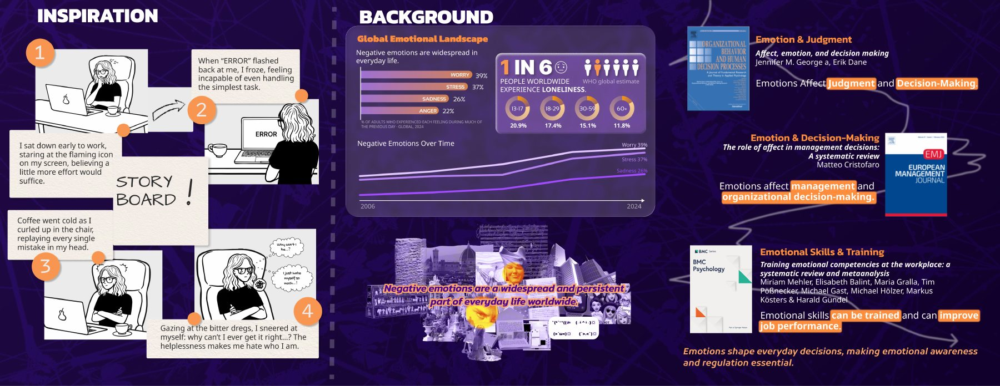
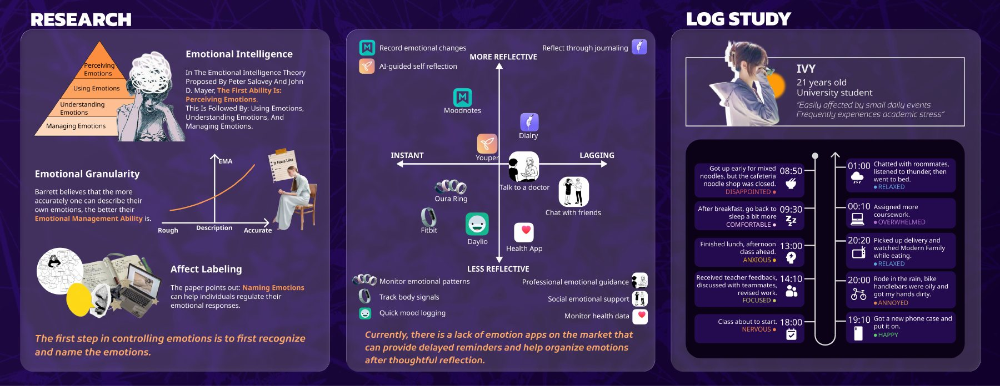
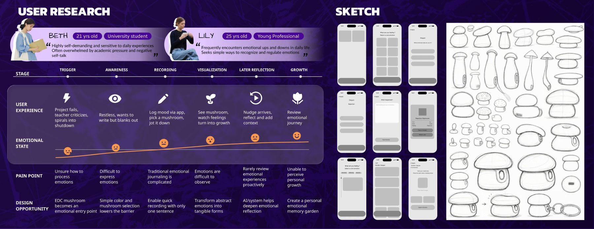
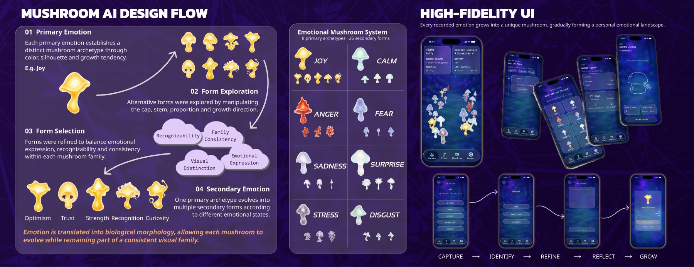
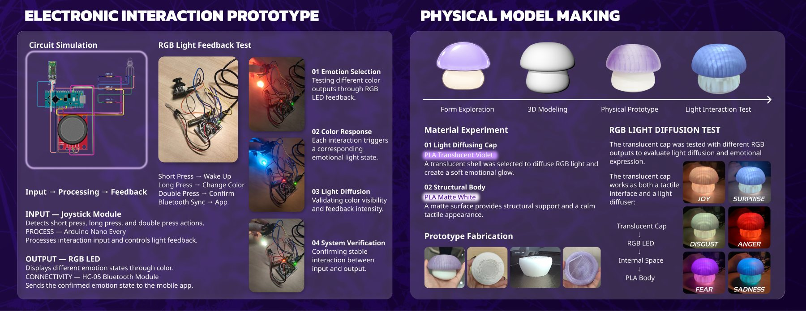
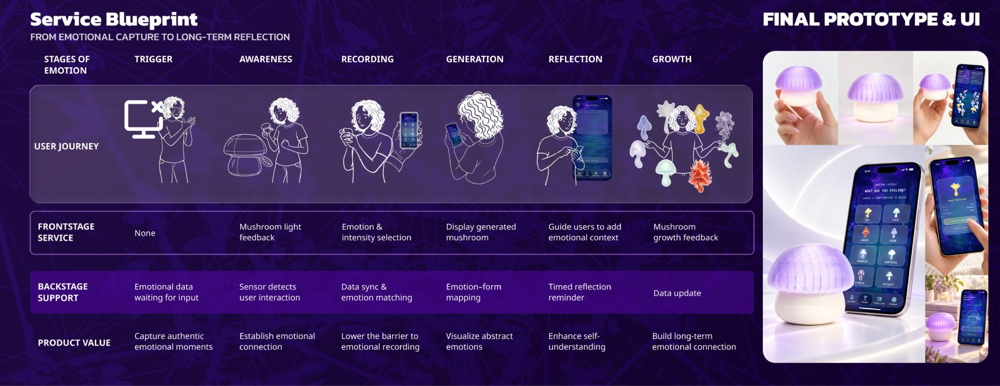
I am Derong Ye, an interdisciplinary designer working across physical–digital interaction, systems thinking, service design, and spatial experience.
My approach
I turn complex human needs into connected experiences—moving from research and system mapping to tangible prototypes, interfaces, and service ecosystems.
Selected work · 2024–2026
01 / Personal intelligence
A physical–digital reflection experience that transforms everyday feelings into a growing personal garden.






02 / Planetary intelligence
A reef-protection system that connects underwater observation with public understanding and continuous action.
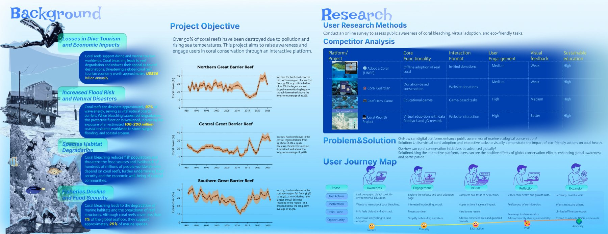
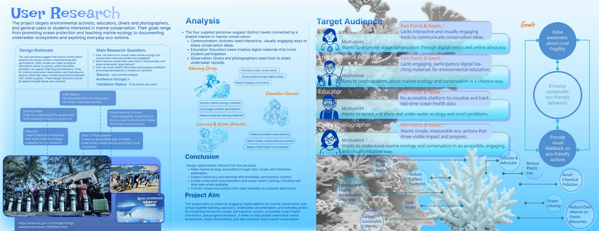
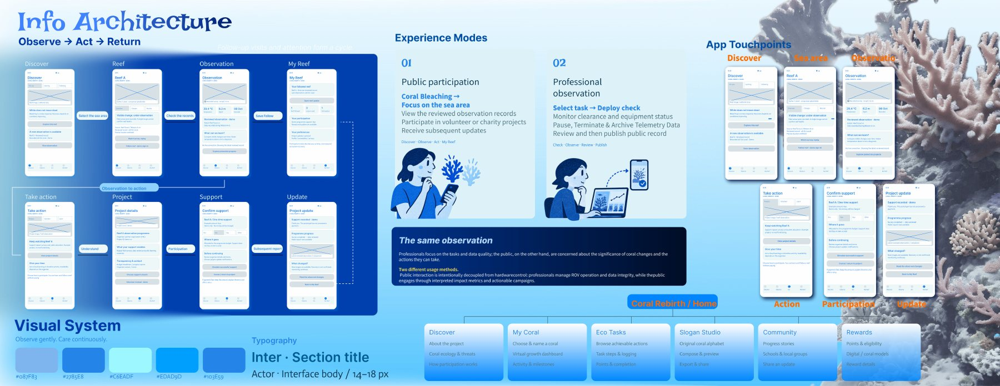
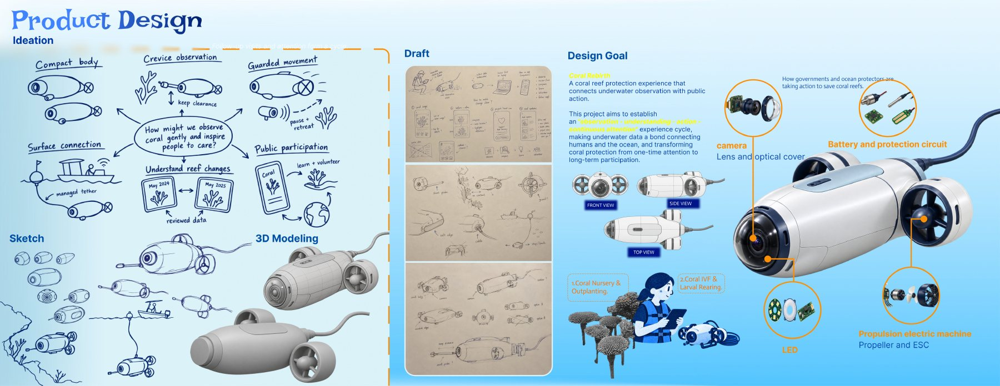
03 / Urban intelligence
An on-demand private dining service that turns the uncertainty of finding space into a calm, self-directed urban experience.
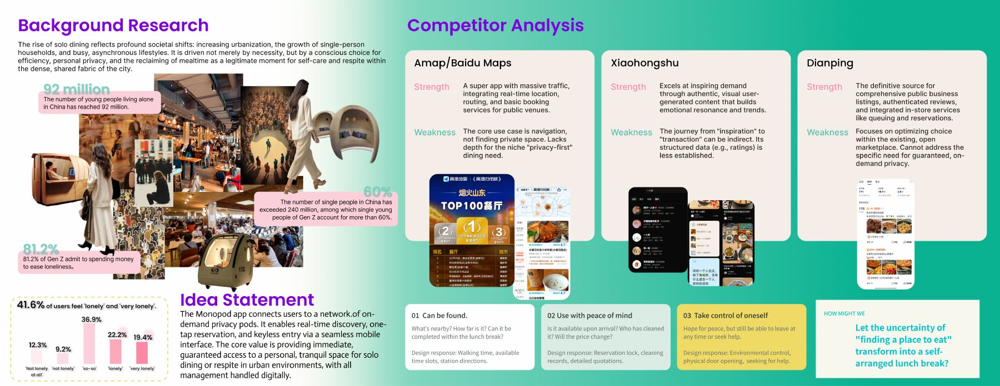
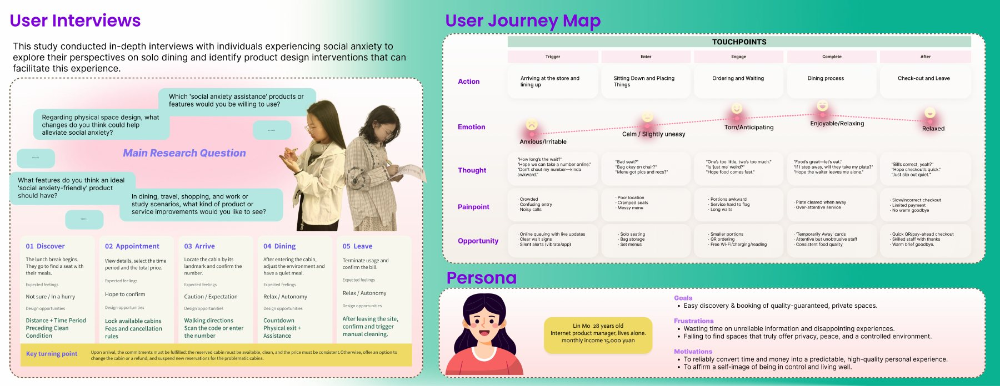
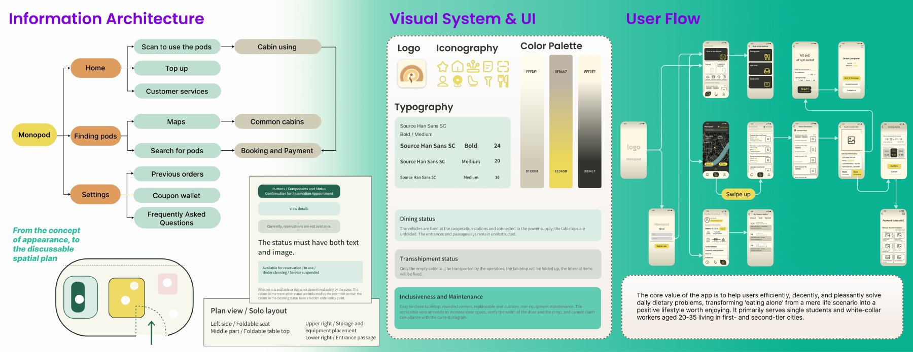
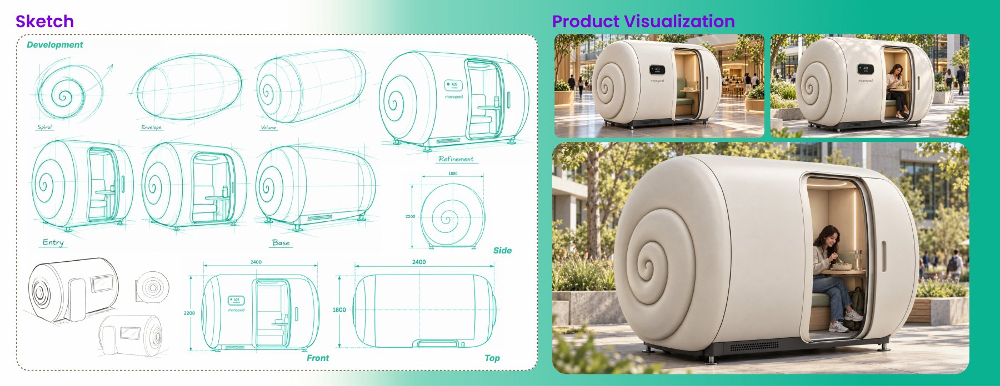
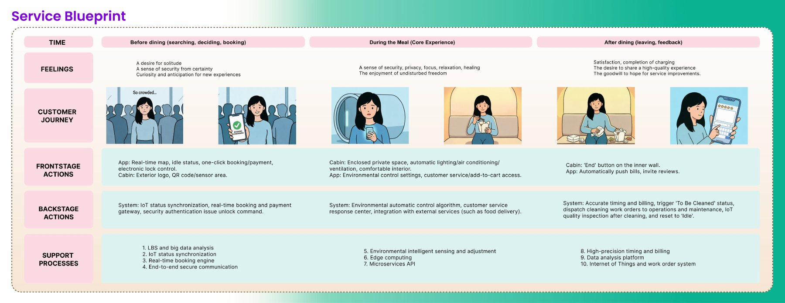
04 / Community intelligence
A hybrid community experience that helps middle-aged women rediscover interests, relationships, and a sense of self.
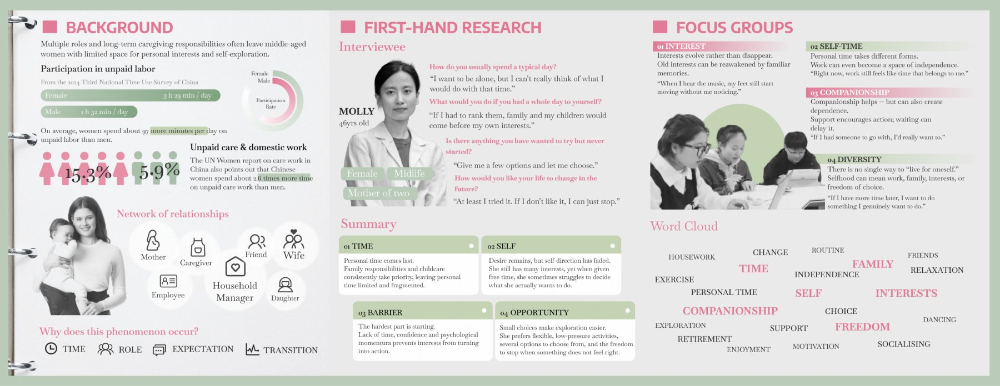
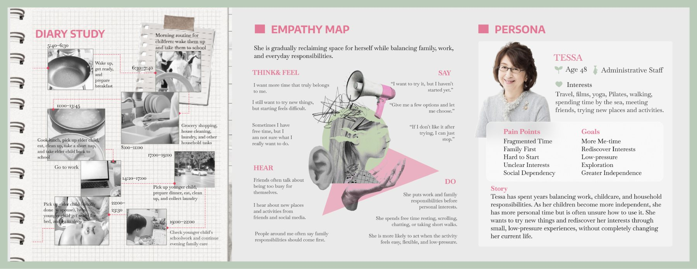
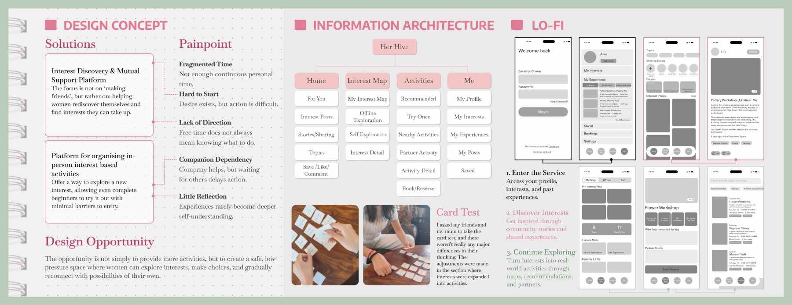
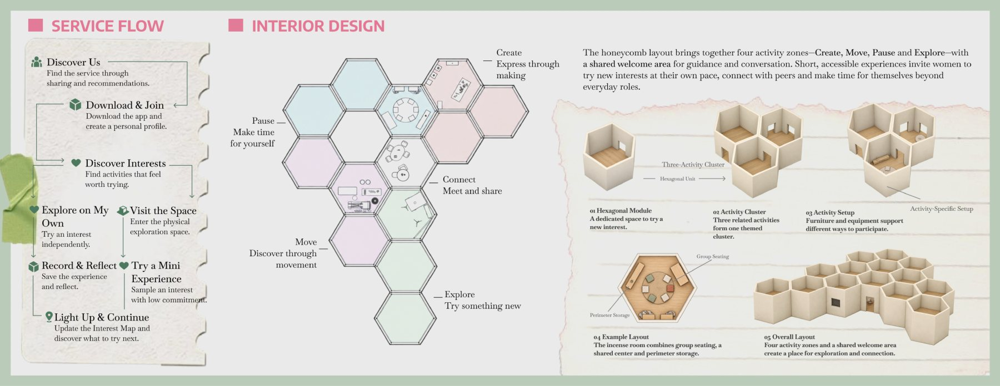
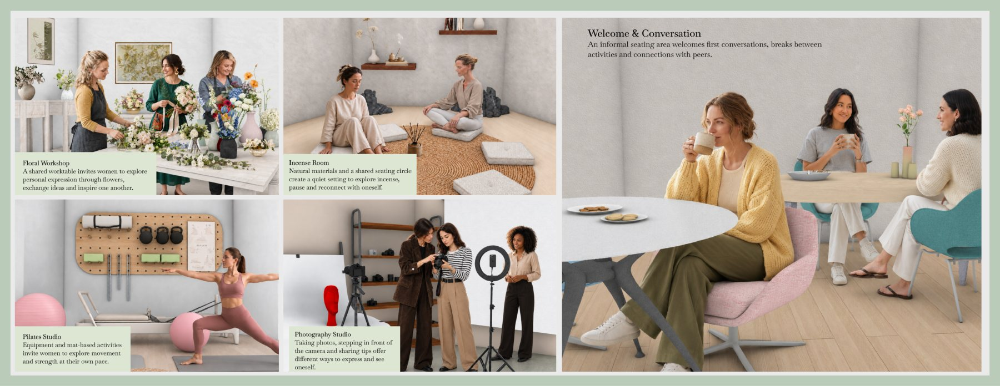
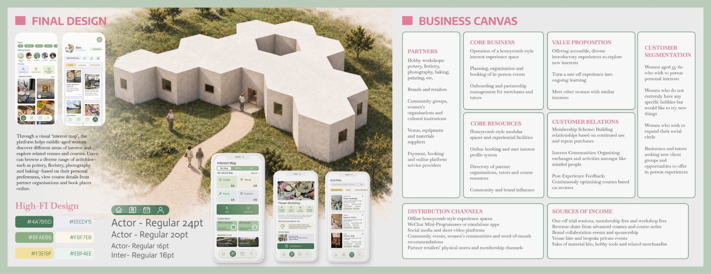
Thank you for viewing